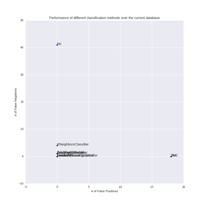
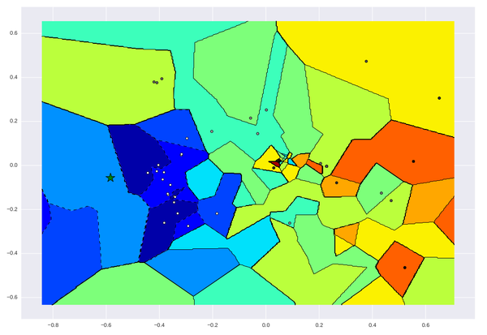
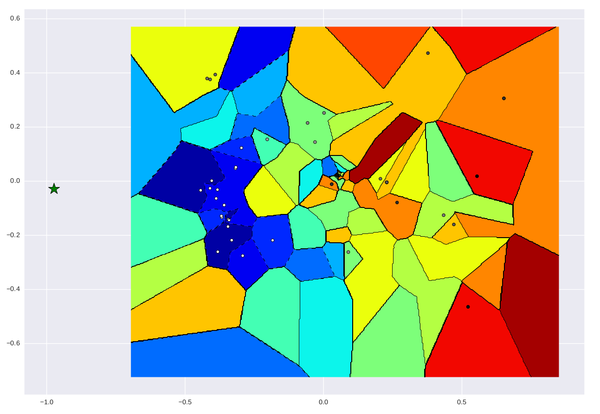

Created: 2017-01-13 ven. 17:13
is_malicious(js_code) is a magical function that detects if a JS snippet is maliciousfunction lol(js_code){ if is_malicious(js_code){ //Don't be malicious } else { //Be malicious } }
Transform this:
!function $(){console.log('!'+$+'()')}() //Credit @cowboy
into this:
array([ 0.40662066, 0.08107816, 0.71288435, ..., 0.96536863])
then do some Machine Learning Magic
!function $(){console.log('!'+$+'()')}() //Credit @cowboy
Lex it:
NOT FUNCTION ID LPAREN RPAREN LBRACE ID PERIOD ID LPAREN STRING PLUS ID PLUS STRING RPAREN RBRACE LPAREN RPAREN
Use TFIDF: \[\frac{\textrm{Term Frequency}}{\textrm{Inverse Document Frequency}}\]
array([ 0.40662066, 0.08107816, 0.71288435, ..., 0.96536863])

Linear classifier, Random Forest and Gradient Boosting all make 0 errors on a leave-one-out.


Things that are easier to compute, but don't work as well: